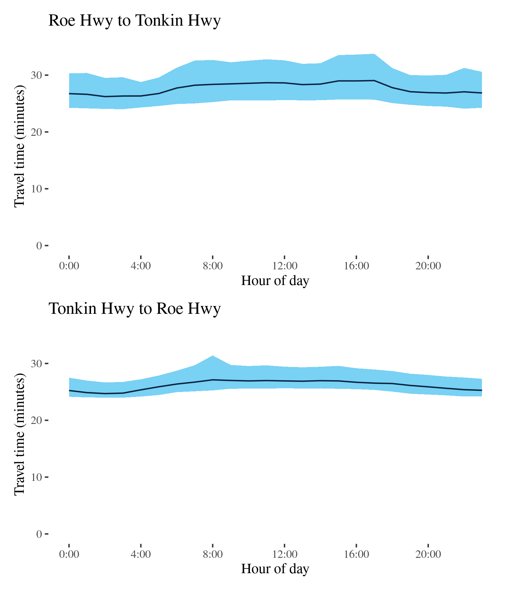
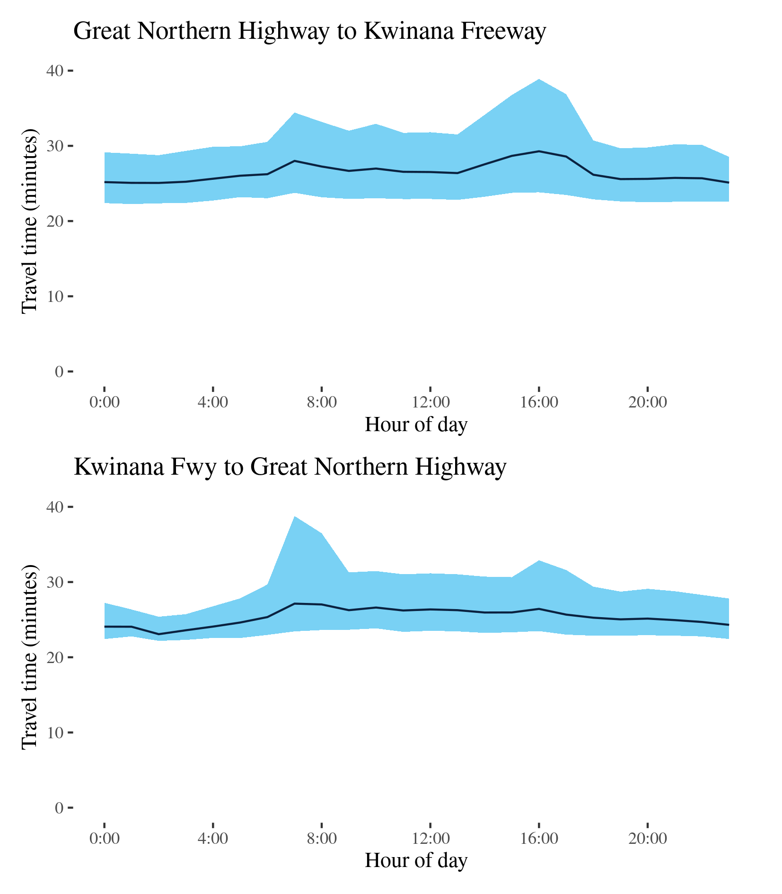

Congestion Report 2019
Congestion Report 2019Perth
 Note: Ratio of median travel time to best (shortest) travel time for each route.
Note: Ratio of median travel time to best (shortest) travel time for each route.Across Perth all routes have METRs of around 1.1, hence there is typically around 10 per cent variation between the median travel time and best travel time across each route. Routes 5 and 6, between the CBD and Fremantle (via the Stirling and Canning Highways, respectively), exhibit slightly higher variation. Routes with relatively high MEURs include Route 2 (Mitchell Highway) and Route 3 (Reid Highway). On Route 2 (Mitchell) the MEUR is 2.7 southbound and 4.7 northbound, and on Route 3 (Reid) the MEUR is 2.5 and 2.8 (westbound and eastbound, respectively). In both cases the larger difference between median variation and the minimum travel time variation, is due to there being very little variation in travel time on these routes at non-peak times.
Route 1 - Roe Hwy to Tonkin Hwy / Tonkin Hwy to Roe Hwy
This route follows the Great Northern Highway north-south between the Tonkin Highway at Muchea and the Roe Highway–Reid Highway junction at Middle Swan. It passes Herne Hill, Upper Swan and Bullsbrook along its way. The BITRE telematics data shows it is a major route for freight heading north out of Perth.

| Direction | Best travel time | Longest median travel time | METR | Least uncertainty travel time | Most uncertainty travel time | MEUR | Distance |
|---|---|---|---|---|---|---|---|
| Roe Hwy to Tonkin Hwy | 00:26:13 | 00:29:02 | 1.1 | 00:04:29 | 00:08:05 | 1.4 | 34.5 |
| Tonkin Hwy to Roe Hwy | 00:24:42 | 00:27:07 | 1.1 | 00:02:40 | 00:06:09 | 1.4 | 34.5 |
The best median travel time travelling north was 26 minutes at 2am and the lowest uncertainty was experienced at 4am with an interquartile range of 4.5 minutes. The longest median travel times and the greatest uncertainty were during the afternoon peak at 5pm with a median travel time of 29 minutes and an interquartile range of 8 minutes. Travel times and uncertainty were slightly higher throughout the day. Mild delays were more apparent in the southern part of the route.
The best travel times and the lowest uncertainty travelling south were at 2am with a median travel time of 25 minutes and an interquartile range of 3 minutes. The longest median travel times and the greatest uncertainty were experienced in the morning peak at 8am with a median of 27 minutes and an interquartile range of 6 minutes. Travel times and uncertainty were slightly higher throughout daylight hours. Again mild delays were more apparent in the southern sections of the route.

Route 2 (Mitchell) - Hester Avenue to Swan River / Swan River to Hester Avenue
This route follows the Mitchell Highway (Route 2) between Hester Avenue near Ridgewood in Perth’s northern suburbs, and the Swan River near the Perth CBD, and is one of the main routes servicing Perth’s northern suburbs. It also carries some traffic from the north coast of Western Australia.

| Direction | Best travel time | Longest median travel time | METR | Least uncertainty travel time | Most uncertainty travel time | MEUR | Distance |
|---|---|---|---|---|---|---|---|
| Hester Avenue to Swan River | 00:24:18 | 00:46:56 | 1.1 | 00:01:50 | 00:32:15 | 4.7 | 35.9 |
| Swan River to Hester Avenue | 00:23:58 | 00:34:04 | 1.1 | 00:01:47 | 00:23:08 | 2.7 | 35.9 |
The best median travel time southbound from Hester Avenue to the Swan River was 24 minutes at 4am and the lowest uncertainty were experienced at 2am with an interquartile range of 2 minutes. The longest median travel times and the greatest uncertainty were during the morning peak at 7am with a median travel time of 47 minutes and an interquartile range of 32 minutes. There was also a smaller, but still significant, increase in travel time and uncertainty in the afternoon peak. Delays were most apparent in two sections: one near Edgewater (south of Joondalup) and the other near Stirling (closer to the CBD).
The best median travel time travelling north was 24 minutes at 5am and the lowest uncertainty was at 3am with an interquartile range of 2 minutes. The longest median travel times were at 4pm with a median travel time of 34 minutes and the greatest uncertainty was experienced at 5pm with an interquartile range of 23 minutes. Unlike the southbound direction, there was no observable morning peak in northbound journeys, reflecting the significance of this route as a corridor for commuter’s heading south towards the CBD. Congestion was again most apparent near Stirling.
Route 2 (Kwinana) - Forrest Hwy to Mitchell Hwy / Mitchell Freeway to Forrest Hwy
This route follows the Kwinana Highway connecting the Forrest Highway south of Mandurah and the Mitchell Highway at the Swan River near the Perth CBD. It is one of the main routes servicing Perth’s southern suburbs and Rockingham and Mandurah south of Perth.

| Direction | Best travel time | Longest median travel time | METR | Least uncertainty travel time | Most uncertainty travel time | MEUR | Distance |
|---|---|---|---|---|---|---|---|
| Forrest Hwy to Mitchell Hwy | 00:47:12 | 01:11:01 | 1.1 | 00:04:30 | 00:38:13 | 3.4 | 70.7 |
| Mitchell Freeway to Forrest Hwy | 00:44:27 | 00:53:20 | 1.0 | 00:03:18 | 00:24:23 | 2.2 | 70.7 |
The best median travel time for northbound travel was 47 minutes at 3am and the lowest uncertainty were experienced at 1am with an interquartile range of 4.5 minutes. The longest median travel times and greatest uncertainty were experienced at 8am during the morning peak with a median of 1 hour 11 minutes and interquartile range of 38 minutes. Travel times and uncertainty remained elevated throughout business hours. Delays were severe immediately south of the Swan River and near the intersection with the Roe Highway at Leeming.
The best median travel time heading south was 44 minutes at 11pm and the lowest uncertainty were at 2am with an interquartile range of 3 minutes. The longest median travel times and the greatest uncertainty were experienced during the afternoon peak at 4pm with a median travel time of 53 minutes and an interquartile range of 24 minutes. Unlike the northbound reverse route, travel time and uncertainty remained stable throughout the whole day except the peak hours in the afternoon, likely reflecting the significance of this route as a corridor for commuter traffic heading north towards the CBD.

Route 3 (Roe Highway) - Great Northern Highway to Kwinana Freeway / Kwinana Freeway to Great Northern Highway
This route follows the Roe Highway between its junction the Great Northern Highway (Route 1) in the north and its connection with the Kwinana Freeway (Route 2) at Leeming in Perth’s south.

| Direction | Best travel time | Longest median travel time | METR | Least uncertainty travel time | Most uncertainty travel time | MEUR | Distance |
|---|---|---|---|---|---|---|---|
| Great Northern Highway to Kwinana Freeway | 00:25:03 | 00:29:17 | 1.1 | 00:05:51 | 00:14:34 | 1.5 | 34.1 |
| Kwinana Freeway to Great Northern Highway | 00:23:04 | 00:27:08 | 1.1 | 00:03:13 | 00:15:21 | 2.1 | 34.2 |
The best median travel times and lowest uncertainty for southbound travel were at 11pm with a median of 25 minutes and an interquartile range of 6 minutes. The longest median travel times and the greatest uncertainty were during the afternoon peak at 4pm with a median travel time of 29 minutes and an interquartile range of 15 minutes respectively. Travel time and uncertainty remained elevated throughout business hours. Delays were most apparent near intersections with Route 1 at Middle Swan, Route 4 at Forrestfield and the Kwinana Freeway (Route 2) at Leeming.
The best travel times and the lowest uncertainty travelling north were at 2am with a median travel time of 23 minutes and an interquartile range of 3 minutes. The longest median travel times and greatest uncertainty were at 7am with a median of 27 minutes and an interquartile range of over 15 minutes.

Route 3 (Reid Highway) - Mitchell Freeway to Tonkin Freeway / Tonkin Freeway to Mitchell Freeway
This route follows the Reid Highway between its connection with the Mitchell Freeway (Route 2) north of Perth’s CBD, and its interchange with the Tonkin Freeway (Route 4) at Malaga, in Perth’s near northern suburbs. It passes the Perth suburbs of Westminster, Murrabooka and Noranda.

| Direction | Best travel time | Longest median travel time | METR | Least uncertainty travel time | Most uncertainty travel time | MEUR | Distance |
|---|---|---|---|---|---|---|---|
| Mitchell Freeway to Tonkin Fwy | 00:07:45 | 00:10:23 | 1.1 | 00:00:57 | 00:07:15 | 2.8 | 10.3 |
| Tonkin Freeway to Mitchell Fwy | 00:07:28 | 00:09:17 | 1.1 | 00:00:40 | 00:05:07 | 2.5 | 10.5 |
The best median travel time eastbound on the route was 8 minutes at 11pm and the lowest uncertainty were experienced at 2am with an interquartile range of 1 minute. The longest median travel times and greatest uncertainty were during the afternoon peak at 3pm with a median travel time of 10 minutes and an interquartile range of 7 minutes. There was also a smaller peak between 7 and 9am in the morning. Delays were most apparent near the Kwinana Freeway.
The best median travel time travelling west was 7.5 minutes at 4am and the lowest uncertainty were at 1am with an interquartile range of 40 seconds. The longest median travel times and the greatest uncertainty were experienced during the afternoon peak at 4pm with 9 minutes and an interquartile range of 5 minutes respectively. Unlike the eastbound direction, there was no morning peak observed in westbound trips. Again delays were most apparent near the Kwinana Freeway.
Route 4 - Great Northern Highway to Thomas Road / Thomas Road to Great Northern Highway
This route follows the Tonkin Highway (Route 4) between its junction with the Great Northern Highway, at Muchea north of Perth, and its terminus at Thomas Road on Perth’s southern outskirts. It crosses the Reid Highway (Route 3) north of Morley and the Swan River near Redcliffe, and runs past Perth airport.

| Direction | Best travel time | Longest median travel time | METR | Least uncertainty travel time | Most uncertainty travel time | MEUR | Distance |
|---|---|---|---|---|---|---|---|
| Great Northern Highway to Thomas Road | 00:55:57 | 01:07:21 | 1.1 | 00:13:20 | 00:43:22 | 1.6 | 79.9 |
| Thomas Road to Great Northern Highway | 00:53:27 | 01:09:15 | 1.1 | 00:10:00 | 00:31:13 | 1.7 | 79.9 |
The best travel times and the lowest uncertainty for southbound travel to Thomas Road were experienced at 3am with a median travel time of 56 minutes and an interquartile range of 13 minutes. The longest median travel times and greatest uncertainty were experienced at 7am with a median of 1 hour 7 minutes and an interquartile range of 43 minutes, both of which occurred during the morning peak. There was a mild afternoon peak in uncertainty as well.
The best travel times for northbound trips were at 2am with a median travel time of 53 minutes and the lowest uncertainty were at 3am with an interquartile range of 10 minutes. The longest median travel time was 1 hour 9 minutes experienced during the afternoon peak at 4pm and the greatest uncertainty was at 5pm with an interquartile range of 31 minutes. The causes of the third peak are unclear. Otherwise the greatest uncertainty was during the afternoon peak at 4pm. There was also a small increase in travel time uncertainty during the morning peak.
In both directions delays were most apparent near the Swan River between Redcliffe and Bayswater. This was true of the morning, afternoon and “third” peaks.
Route 5 - Great Eastern Highway to Stirling Hwy, High Street / Stirling Hwy, High Street to Great Eastern Highway
This route runs between High Street (Route 7) in Fremantle, via the northern side of the Swan River and to the junction of Albany Highway, Great Eastern Highway (GEH) and Canning Highway near Burswood, southwest of the CBD. It traverses the Stirling Highway, Mounts Bay Road, Riverside Drive and the Causeway.

| Direction | Best travel time | Longest median travel time | METR | Least uncertainty travel time | Most uncertainty travel time | MEUR | Distance |
|---|---|---|---|---|---|---|---|
| Great Eastern Highway to Stirling Hwy, High Street | 00:23:43 | 00:29:05 | 1.1 | 00:07:52 | 00:29:34 | 1.9 | 20.3 |
| Stirling Hwy, High Street to Great Eastern Highway | 00:24:21 | 00:32:21 | 1.1 | 00:06:30 | 00:27:15 | 2.1 | 20.7 |
The best median travel time travelling from Burswood to Fremantle (i.e. Great Eastern Highway to Stirling Highway) was 24 minutes at 2am and the lowest uncertainty were experienced at midnight with an interquartile range of 8 minutes. The longest median travel times were experienced at 12pm with a median travel time of 29 minutes and the greatest uncertainty was at 5am with an interquartile range of 30 minutes. There were no distinctive peaks in travel time along this route, but there is significant variation in travel time uncertainty across the entire 24-hour period.
The best travel times and the lowest uncertainty travelling in the reverse direction (from Fremantle to the CBD (and Burswood) were experienced at 3am with a median travel time of 24 minutes and an interquartile range of 6.5 minutes. The longest median travel times and greatest uncertainty were during the morning peak at 8am with a median travel time of 32 minutes and an interquartile range of 27 minutes. There was a slight increase in uncertainty during the afternoon peak, which was also higher throughout business hours. Delays were more apparent near the CBD and near Claremont.
Route 6 - Fremantle to Great Eastern Highway / Great Eastern Highway to Fremantle
This surface route follows the Canning Highway between Fremantle and the Great Eastern Highway, to the east of the Perth CBD—like Route 5 but south of the Swan River.
| Direction | Best travel time | Longest median travel time | METR | Least uncertainty travel time | Most uncertainty travel time | MEUR | Distance |
|---|---|---|---|---|---|---|---|
| Fremantle to Great Eastern Highway | 00:18:36 | 00:24:20 | 1.1 | 00:05:57 | 00:20:19 | 1.9 | 16.0 |
| Great Eastern Highway to Fremantle | 00:18:29 | 00:23:26 | 1.1 | 00:04:13 | 00:16:45 | 2.5 | 15.8 |
The best travel times and the lowest uncertainty for eastbound travel to the CBD were experienced at 5am with a median travel time of 19 minutes and an interquartile range of 6 minutes. The longest median travel times and the greatest uncertainty were at midday with a median travel time of 24 minutes and an interquartile range of 20 minutes. Travel time uncertainty gradually increased between 4am and midday (12pm) where it formed a distinct peak, which is not necessarily associated with commuter traffic flows, making this route unique in this report. There was also a smaller peak in the afternoon. Delays were more apparent closer to Fremantle.
The best median travel time travelling west to Fremantle was 18 minutes at 5am and the lowest uncertainty were experienced at 1am with an interquartile range of 4 minutes. The longest median travel time was 23 minutes at 3pm and the greatest uncertainty was in the afternoon at 4pm with an interquartile range of 17 minutes. Delays and uncertainty were at similar levels throughout business hours. Delays were fairly evenly distributed across the route.
Elevated median travel time and uncertainty were observed during business hours in both directions.
Route 7 - Stirling Hwy to Tonkin Freeway / Tonkin Freeway to Stirling Hwy
This route follows the Leach Highway (Route 7) between the Stirling Highway (Route 6), at Fremantle, to the interchange with the Tonkin Freeway (Route 4) near Perth Airport.

| Direction | Best travel time | Longest median travel time | METR | Least uncertainty travel time | Most uncertainty travel time | MEUR | Distance |
|---|---|---|---|---|---|---|---|
| Stirling Hwy to Tonkin Freeway | 00:19:58 | 00:24:55 | 1.1 | 00:04:38 | 00:19:18 | 2.0 | 21.9 |
| Tonkin Freeway to Stirling Hwy | 00:21:36 | 00:25:05 | 1.1 | 00:04:31 | 00:15:00 | 2.1 | 22.1 |
The best median travel time for eastbound trips from Fremantle to the Tonkin Freeway was 20 minutes at midnight and the lowest uncertainty were experienced at 3am with an interquartile range of 5 minutes. The longest median travel times and the greatest uncertainty were during the morning peak at 8am with a median travel time of 25 minutes and an interquartile range of 19 minutes. There were also smaller peaks in median travel time and travel time uncertainty in the afternoon and evening. Delays were evenly distributed along the route but slightly more apparent around Riverton midway along the route.
The best median travel time for westbound travel from the Tonkin Freeway to Fremantle was 22 minutes at 11pm and the lowest uncertainty were experienced at 1am with an interquartile range of 4.5 minutes. The longest median travel times and greatest uncertainty were at 8am with a median of 25 minutes and an interquartile range of 15 minutes. There was also an afternoon peak where the increase in uncertainty was of similar magnitude to that of the morning peak. Delays were more apparent near Fremantle and Welshpool.
Route 8 - Canning Road to Mitchell Freeway / Mitchell Freeway to Canning Road
This route runs from Canning Road on Perth’s eastern fringe, through Perth’s eastern suburbs, to the Mitchell Freeway (Route 2) just west of the CBD. The route follows the Graham Farmer Freeway, Orrong Road and Welshpool Road.

| Direction | Best travel time | Longest median travel time | METR | Least uncertainty travel time | Most uncertainty travel time | MEUR | Distance |
|---|---|---|---|---|---|---|---|
| Canning Road to Mitchell Freeway | 00:24:41 | 00:31:12 | 1.1 | 00:10:39 | 00:24:07 | 1.3 | 24.1 |
| Mitchell Freeway to Canning Road | 00:23:54 | 00:28:42 | 1.1 | 00:09:16 | 00:18:05 | 1.4 | 24.1 |
The best median travel time travelling west to the CBD (Canning Road to the Mitchell Freeway) was 25 minutes at 7pm and the lowest uncertainty were experienced at 4am with an interquartile range of 11 minutes. The longest median travel times and the greatest uncertainty were at midnight with a median travel time of 31 minutes and an interquartile range of 24 minutes. The reasons for these delays at a time that would ordinarily be assumed to be free running conditions are not apparent, but delays were most apparent on Orrong Road near Carlisle. Otherwise there were mild morning and afternoon peaks.
The best travel times and the lowest uncertainty eastbound (Mitchell Freeway to Canning Road) were experienced at 7pm with a median travel time of 24 minutes and an interquartile range of 9 minutes. The longest median travel time was 29 minutes at 3am. Like the midnight peak in the reverse direction, the reason for this are unclear but delays were concentrated on Welshpool Road East. Otherwise travel times were largely stable throughout the day. The greatest uncertainty was in the afternoon at 4pm with an interquartile range of 18 minutes.